Nomai Mask


Spoiler-Free Background
Before we get into this little blog post, I want to give you a little bit of background on what a Nomai Mask even is!
A Nomai is an alien race from one of my favorite games, Outer Wilds. It is a space exploration game in which you, a Hearthian, travel the dying solar system in an attempt to figure out the mysteries of an ancient alien race (the Nomai) while also with the fun gameplay mechanic of being in a 22 minute time loop!
Warning!
This post contains spoilers for the game. If you are interesting in playing Outer Wilds (which I highly recommend!), please play it first and then come back so you stay spoiler free!

Starting the Mask
Because I had never used EVA foam or have ever made a mask like this, I mostly followed a tutorial on YouTube by Punished Props (their content is so amazing!) Here is a link to the video:

First, I had to cut out all the templates (made by Punished Props) so I can have an easier time cutting the EVA foam. There was a LOT of different pieces and a lot of paper cut!
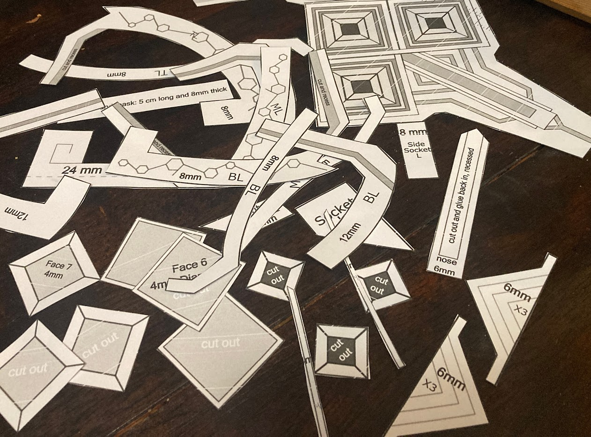Once I had all the templates cut out and ready to go, I started cutting the foam. The first few layers are very rough, as I have never used EVA foam or an exacto knife like this before. The edges are uneven and there are some little strands hanging out but I was still proud of myself for making it!
The Base
After I cut out the holes for the 3 eyes, I came across a little dilemma. There is a small little piece that sits inside of the eye hole and sits in the middle of the eye socket. I wasn't sure how my stumpy little hot glue gun was supposed to glue the foam to it and have it not be raised and look like it's floating.
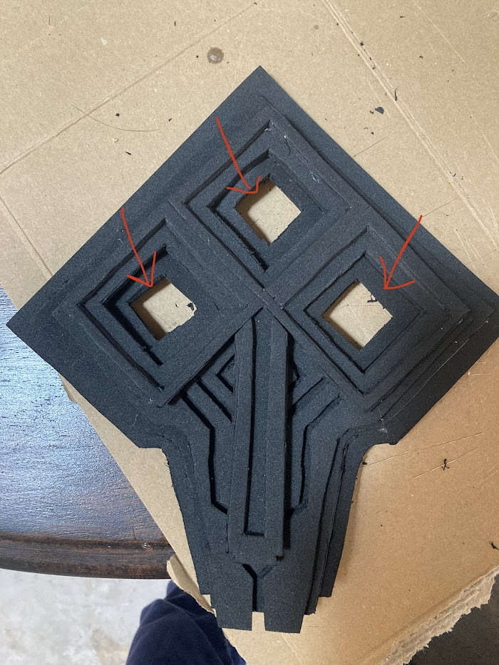I ended up figuring out that the little pieces (the ones being pointed to in the image) are snug enough to stay in place without having to glue it. I decided just to roll with it because I wasn't worried about them falling out. They eventually became stuck in place by the primer and paint, but that's later on in the article.
More Eye Holes
There are even more parts that go around the eye sockets!! In the image below, the eye on the bottom right shows the smaller eye socket. (You can also see my sloppy cutting and hot gluing job!)
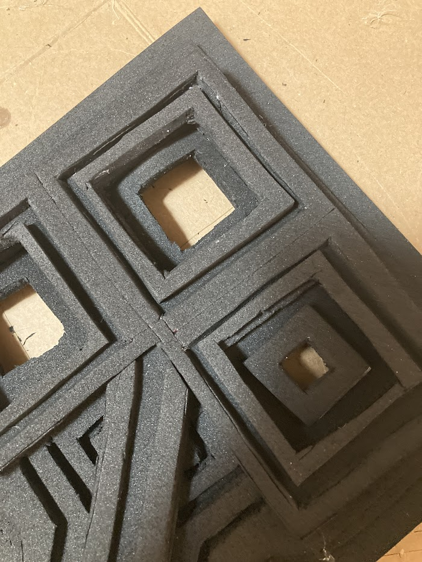I originally wanted this to be a Halloween costume and so I wanted to have the maximum amount of vision possible. Adding the little eye socket piece severely limited my field of vision which is a big whomp whomp when it comes to walking around at night with stairs, bumps, curbs, and little kids to look out for when trick-or-treating.
The Horns
There are so many different pieces for the horns that they took me the longest to make. I first cut out all the horn pieces and labeled them with tape so I knew which piece went with the other pieces.
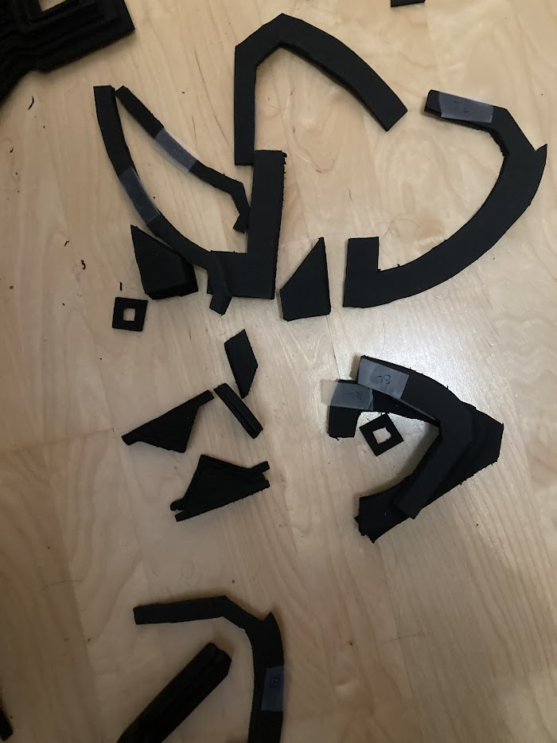I then began the process of hot-gluing all the pieces together, and they started to look amazingly cool!
Here is what the first half of the horns will look like when put together:
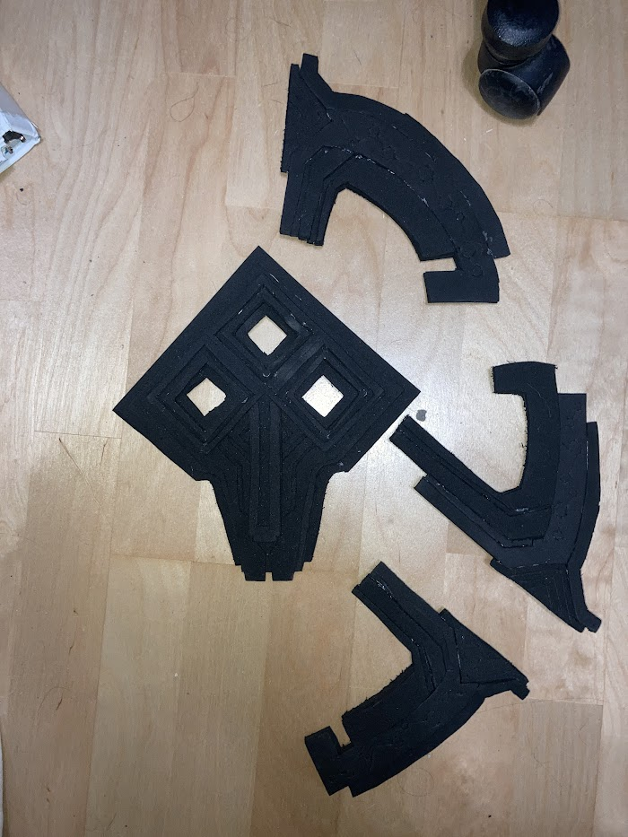Although you can see lots of the messy hot glue and little cutting mistakes, I am so very proud of this image. This was the first time I made something out of foam and I am very proud of it!
Assembly
This is what the mask looked like once I had finished cutting and gluing all of the horns:
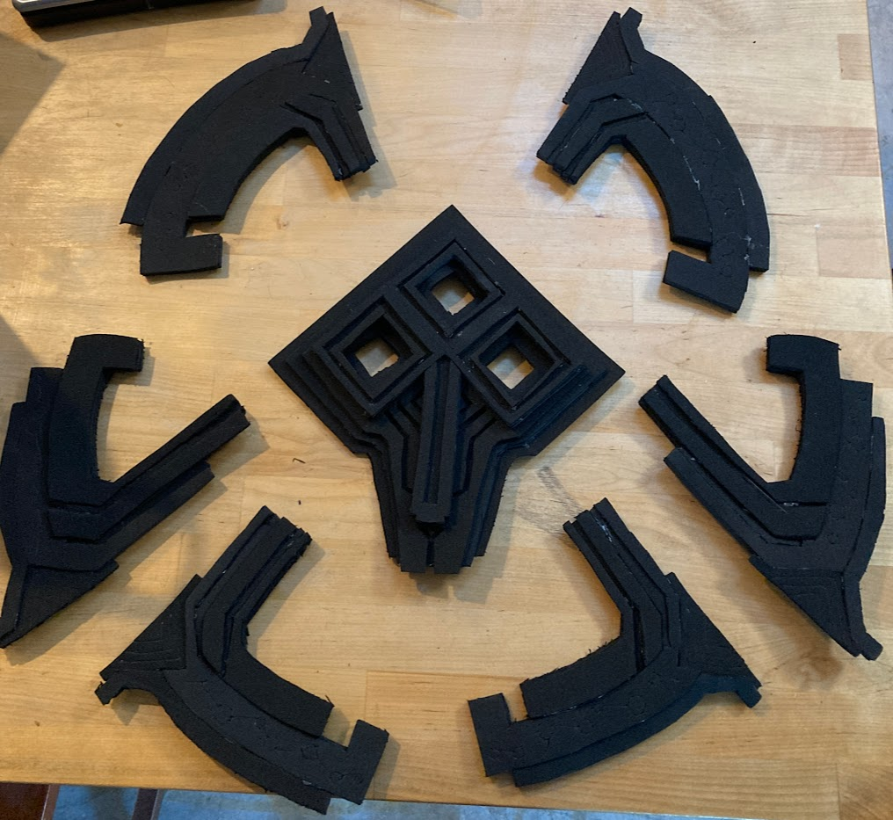One of the final steps of assembly was to add walls around the base to give it some depth! This was a little tricky and there is a lot of obvious places where hot glue is but it still looks super awesome in my opinion.
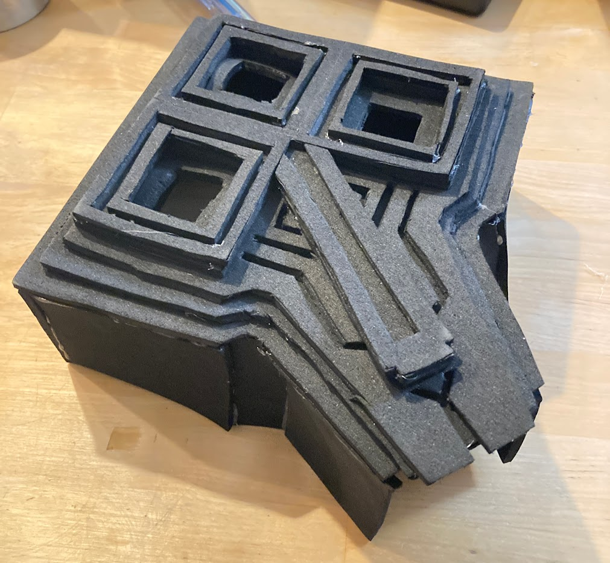Then I was able to glue all the pieces together and BAM! LOOKING EPIC!
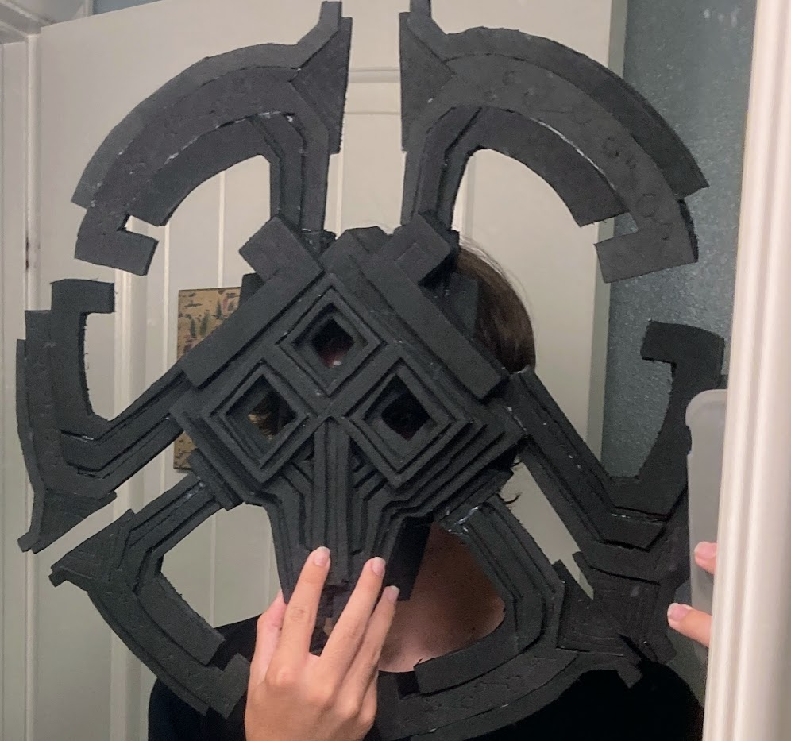Heat Sealing
Before painting, I decided to do a few touch ups.
When watching the tutorial by Punished Props, I noticed they were scoring the foam using a knife and drawing small patterns in the foam. I did that too for the detail but I continued to wonder why their scoring looked so good and why mine looked super mediocre.
After doing a bit of research, I realized the reason that my scoring looked so wonky was because you're supposed to heat seal the foam with a heat gun! I totally overlooked that part! 😅
Here is a comparison of a little test I did. The left shows what I was originally doing without heat sealing the foam. The right shows what it looks like when it IS heat sealed.
There was a little caveat that I realized when doing it though. When sealing the foam, the heat gun caused the hot glue to start melting!! WHICH IS VERY BAD IF I WANT IT TO STAY TOGETHER!
So I had to do it in small portions at a time and then let it cool and then move on to the next portion. I continued to do that until the entire mask was heat sealed and it looks so good now!
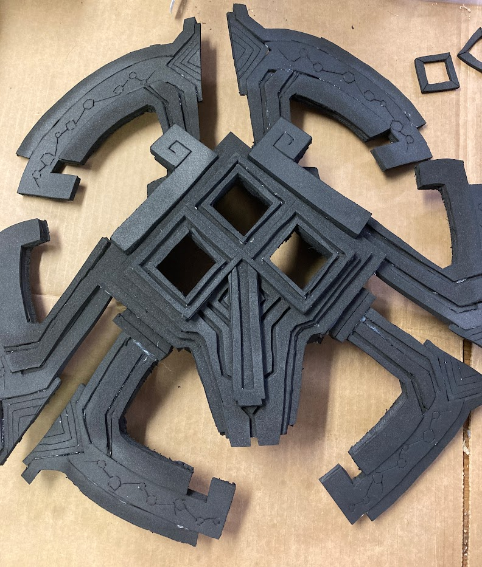The heat sealing also slightly changed the color of the foam, but it's not a big deal because the paint will cover it up. While we're on the topic of paint…
Plasti-Dip, Primer, and Paint (oh my!)
I decided to do what Punished Props did in the tutorial and add Plasti-Dip to the mask. Plasti-Dip is a spray-on plastic covering. It made the foam super smooth and glossy.
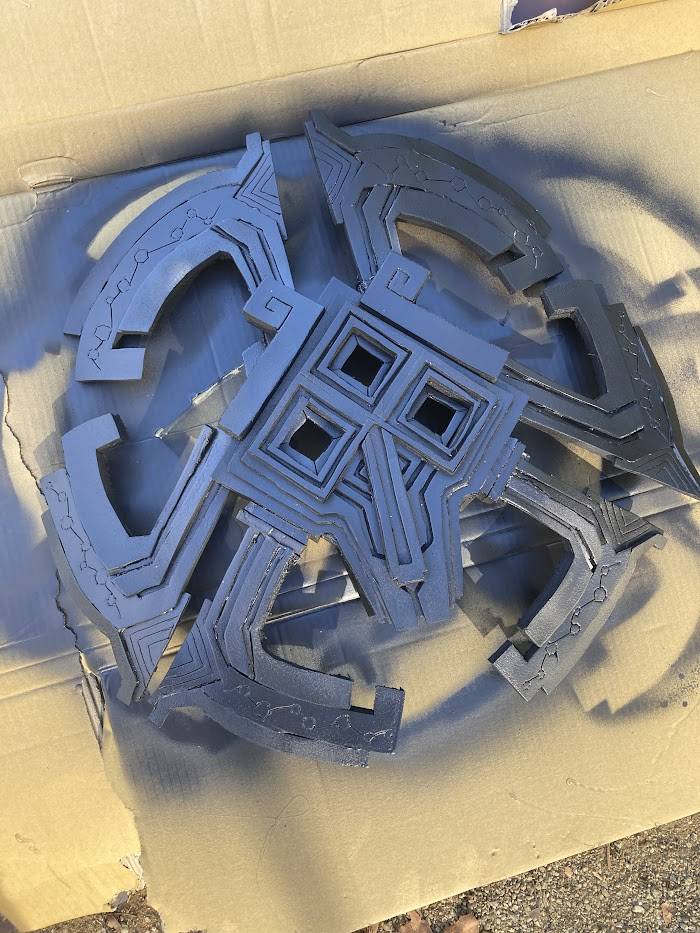After using the Plasti-Dip, I sprayed on some Primer.
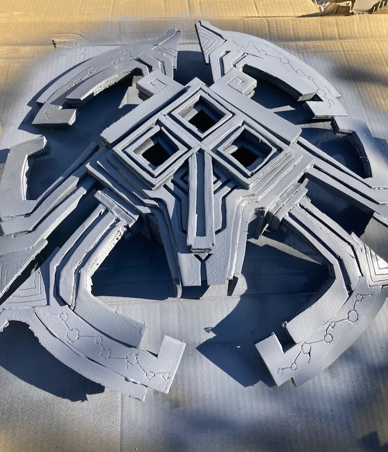After the Primer, I finally started to use some Spray Paint!
While looking for paint references for the mask, I came across the most awesome cosplay I have ever seen that I could use as a reference for the colors.
I found @phaestoz on Instagram who made a killer Solanum cosplay that is 1,000,000 times better than my mask will ever be. I decided to use his mask as a reference for mine!

{kind=link}
{kind=link}
{kind=link}
{kind=link}
{kind=link}
{kind=link}
{kind=link}
{kind=link}
{kind=link}
{kind=link}
{kind=link}
{kind=link}
{kind=link}
{kind=link}
{kind=link}
{kind=link}
{kind=link}
{kind=link}
{kind=link}
{kind=link}
{kind=link}
{kind=link}
{kind=link}
I used pastel green, orange, and yellow as well as some gray and gold!
The Finished Product
{kind=link}
{kind=link}
Here is the finished product!!! I am so very happy on how it turned out. It took me a very long to make it (almost 2-3 months!) but it turned out so good!
After I took the first image, however, I repainted the green and orange to make the colors slightly more pastel to better match the in-game model and the cosplay from above.
I made lots of mistakes but learned a lot while making this. I also got a banger new thing to put up on my wall! I'm very happy with it